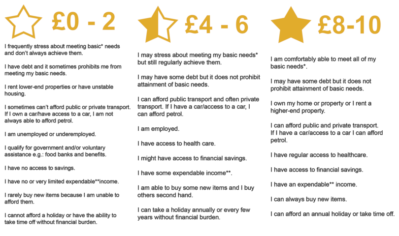
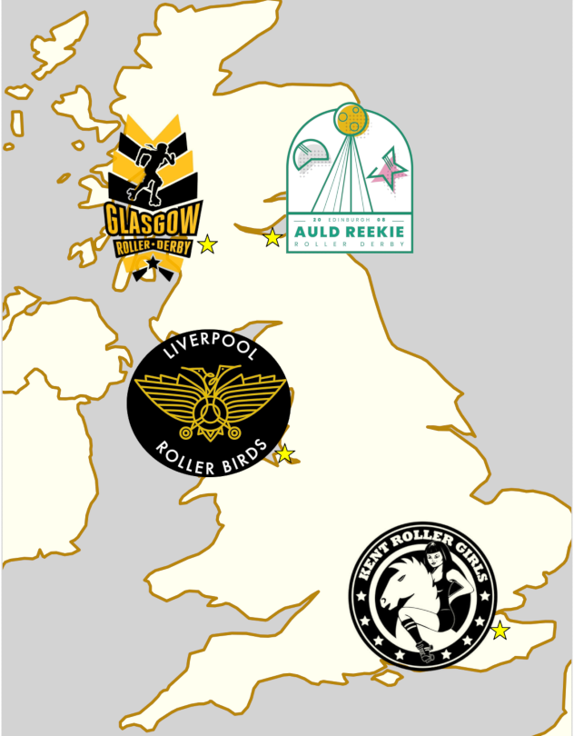

Chaos returns to Glasgow after 6 years.
Arguably one of the high points of roller derby in Glasgow was way back in August 2012, when Glasgow Roller Derby hosted their first tournament event, Chaos on the Clyde (FB , FTS , WEB ). (This was also around the time that the National Museum of Roller Derby was getting going, and so, as well as the international competition, the NMRD stall also helped to develop derby in different senses.)
Unfortunately, thanks to the venue used being closed not long after, and other suitable venues being inaccessible, it's been 6 years now until Glasgow Roller Derby have been able to bring back the event.

But, back it is, with Chaos on the Clyde 2 hosted in GRD's regular venue of the ARC in late August this year!
Read on for more:
Given the confines of the ARC, Chaos 2019 is slightly down-scaled from 2012, with 4 teams from across the UK competing in a round-robin tournament over the weekend.
- Glasgow Roller Derby
- Kent Roller Derby
- Liverpool Roller Birds
- Auld Reekie All-Stars Reserves
It's not just the venue that's changing though. The most positive change for 2019 is the adoption of a sliding scale ticking scheme. Rather than having a single, set, price for tickets (which ignores the economic reality that "£1" means different things to different people), GRD are trialling a "pay what you can afford" system for day tickets. Prospective attendees who are in financial straits serious enough to hinder their meeting basic needs are eligible to pay between £0 and £2 per ticket per day; whilst attendees who are very financially secure are invited to pay between £8 and £10 per ticket. (There is a middle tier for those who can meet their basic needs but are not as secure as the top tier.) This kind of socially-aware pricing scheme is, in our opinion, a very important positive step to the kind of community-aware, inclusive behaviour that Roller Derby can demonstrate, at its best. (It's particularly relevant given the worldwide community's ongoing discussions about inclusivity in access to the sport as a whole, concerning economic power disparities)
Kent Roller Girls had a moderately busy start to the season, but played their most recent bout back in April, against London Rockin' Rollers. Not playing in British Champs means that they selected their own opponents freely, picking teams from relatively nearby, but perhaps had a quieter schedule than otherwise. Kent are also undefeated this season, with their last loss against another Scottish team, Dundee Roller Derby, back in 2018.
Liverpool Roller Birds have had a very busy, and successful, season to date, topping the British Championships Tier 1 North table for this year (and thus earning a trip to Playoffs to play for the Championship). In fact, their only loss of the season was a non-BC game against nearby Leeds Roller Derby.
Auld Reekie's All-Star Reserves have also been busy in British Champs Tier 1 North - and having lost 292-133 against Liverpool back in April, they'll probably be wanting to improve on that at Chaos 2. Unlike Liverpool, that tournament has been the entirety of ARRD B's schedule this season, where they placed solidly in the middle of the Tier.
The hosts, Glasgow, are the other team not to have played in British Champs this year, although they've managed a fairly busy schedule despite that (and against mostly teams from the other end of the country!). In fact, Kent and Glasgow both played London Rockin' Rollers as their most recent opponents, and both won (Kent by a larger margin, but also longer ago). Glasgow are undefeated this year, although their closest game was a mere 4 point win against the Dolly Rockit Rollers of Leicestershire back in late April! These successes, especially against Royal Windsor, have pushed their WFTDA and FTS Global ratings up in the last 6 months, and the hosts will be hoping the trend continues at Chaos 2...
| FTS Global | |
|---|---|
| Glasgow Roller Derby | 590.4 |
| Liverpool Roller Birds | 586.5 |
| Kent Roller Girls | 567.4 |
| Auld Reekie Reserves | 538.0 |
Kent and Liverpool, whilst being WFTDA-member leagues, have not played enough Sanctioned games to be rated by WFTDA yet; and Auld Reekie Reserves, as a B-team, is incapable of being WFTDA-rated, so the FTS Global rating is the only active rating capable of making predictions for this tournament. The ratings are only half the story - looking at the trajectories for the team ratings, both Kent and Liverpool show strong upward movement in their estimated performance, and we'd not be surprised if one or both managed upsets relative to their expected placement.
Whatever happens, we're promised that it won't be another 5 years before Chaos returns to the Clyde, with Glasgow Roller Derby confirming that they intend this to be an annual event from this point on.
Chaos on the Clyde 2 will take place
August 17 - 18 starting at 10am on the Saturday.
At the ARC Health and Fitness, Glasgow Caledonian University.